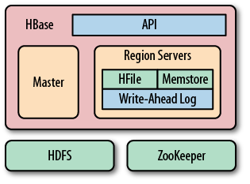

HBase 介绍
0.1 实现
-
数据存储在叫做HFiles的store files中， 用于存储排好序的键值映射, 一旦存储，不可更改
-
文件内部是一系列数据block,并在最后存储了这些block的index
-
当HFiles打开时，加载index并放入内存
-
默认block大小 是64KB, 这个是可配的
-
store files提供了api用于访问特定的值或某日期范围内的值
-
查找操作：
-
使用二分查找在内存中的block index来查看一个hfile中是否包含一个key
-
从磁盘中获取这个具体的key
-
store files通常会使用hadoop， 实现了复本，防止丢数据
-
数据更新：
-
首先写入一个log, 通常叫做write-ahead log WAL
-
然后存入内存中的memstore.
-
当内存中的数据超过一个配置的阀值时，数据就会flush到磁盘上，作为一个HFile
-
flush完后，wal中的日志就可以根据最后flush的点进行丢弃
-
当进行flush操作时，可同时提供读写服务，因为
-
当一个memstore flush成一个文件时，一个新的空的memstore将代替它服务
-
memstore中的数据是排好序，并和hfile的一致，所以flush时，并没有多余的排序等其他处理操作。
删除操作:
-
由于store files不可更改
-
删除操作并不能简单的从store files删除来实现
-
而是存入一个删除标记
-
就像墓碑一样来表明这条记录被删除了
-
在获取数据的过程中，这些标记会屏蔽掉真正的值
读取操作:
-
读取操作会包含一个merge操作
-
因为数据会来自两个地方：
-
memstores中的数据，还未flush到磁盘
-
磁盘上store files中的数据
WAL:
-
永远不会用于读取操作
-
只是用于恢复数据
-
恢复那些当服务器当掉，还未flush到磁盘中的数据
Compaction:
-
flush操作会导致越来越多的HFile
-
使用compaction机制把多个hfile合并成一个较大的hfile
-
两种类型：minor compaction 和 major compaction
-
minor compaction:
-
用于减少HFile的数量
-
只是将多个HFile合并成少量的HFile
-
因为HFile都是排好序的，所以合并很快，只是受限于IO性能
-
Major Compaction：
-
所一个region中一个column family中的所有hfile 合并成一个hfile
-
它会扫描所有的键值对，并把已删除的记录和它们的标记删掉
-
它同时还删掉过期的数据， 根据 time-to-live TTL 或着存在过多的版本号
HBase的三种角色:
-
client library
-
一个master server
-
多个region server
-
region server可以在启动后添加或删除
-
master server用于分配regiong到region server, 并使用zookeeper协助工作

© 2012 王兴朝